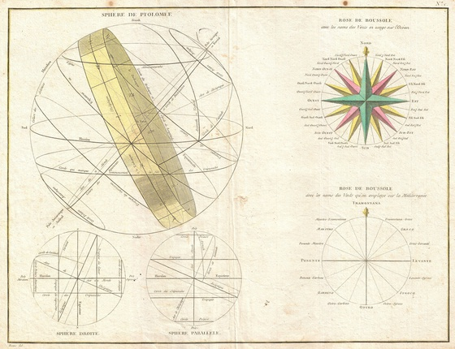

|
You reckon most movies are leaked to torrent sites early on is because someone
copies the film when it's being sent to a cinema. To minimize this risk, you
buy only one copy for your cinema network, and after playing it in one cinema
you send it to the next cinema right away. You always use the shortest path
between two cinemas. There's a rotation plan, so every cinema has exactly one
movie to play (movies are all the same length anyway). This way at least you
know who is to blame when the first torrent appears.
The question is: how much does a movie travel until it gets back to the first cinema? (This is proportional to the risk that it ends up on torrent sites.) |

source: http://commons.wikimedia.org/wiki/File: 1775_Bonne_Map_or_Chart_of_the_Spheres_and_Compass_Rose_- _Geographicus_-_Spheres-bonne-1775.jpg |
Example input3 10 40 -55.5 111.11 -18 -70 | Example output34059.938559 |